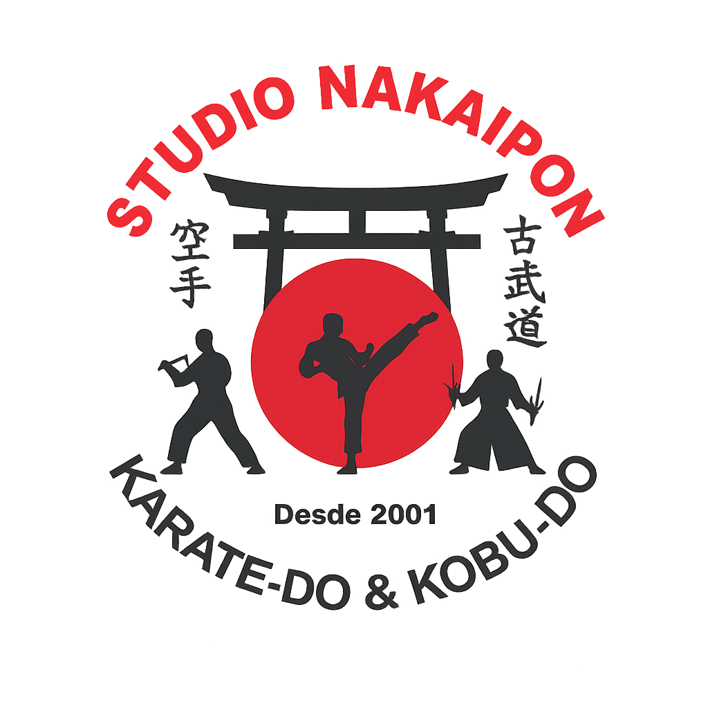
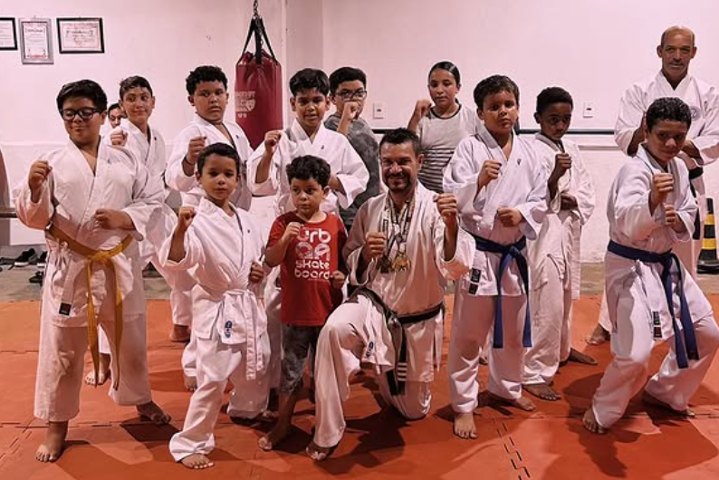
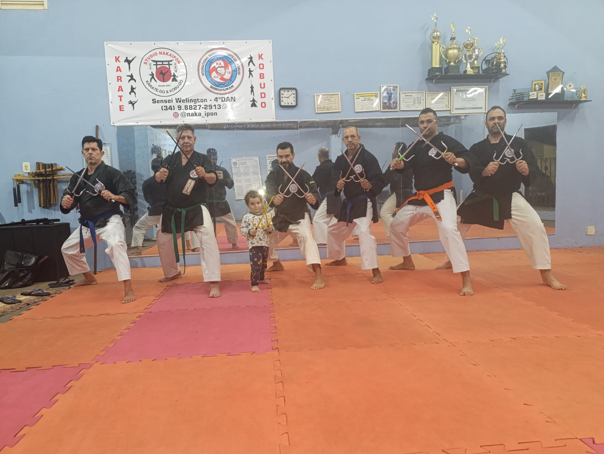
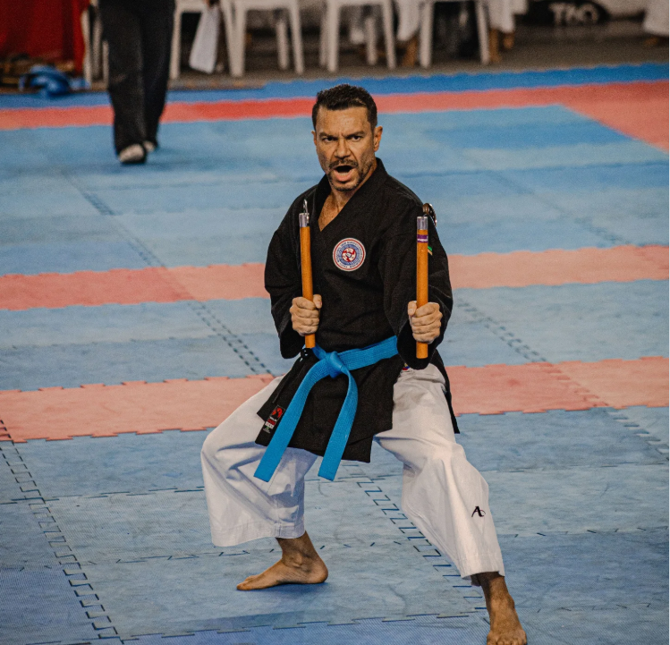

Respeito
Cada aula valoriza etiqueta, escuta, cuidado com o colega e compromisso com o próprio desenvolvimento.

Studio Nakaipon Karatê e KobudoUberaba, MG | Studio Nakaipon
O Studio Nakaipon oferece uma prática marcial séria, acolhedora e progressiva, unindo técnica, disciplina e valores das artes marciais para crianças, jovens e adultos.
O dojo
No Studio Nakaipon, o treinamento vai além da prática esportiva. O dojo busca desenvolver respeito, autocontrole, disciplina, foco e superação, proporcionando um ambiente acolhedor para crianças, jovens e adultos que desejam evoluir física e mentalmente através das artes marciais.
Mais que uma academia, o Studio Nakaipon é um espaço de aprendizado, tradição e desenvolvimento pessoal, mantendo vivos os valores e ensinamentos das artes marciais tradicionais.


Cada aula valoriza etiqueta, escuta, cuidado com o colega e compromisso com o próprio desenvolvimento.
Os fundamentos são trabalhados com progressão clara: postura, deslocamento, golpes, katas, kumite e kobudo.
A prática busca disciplina, foco, autocontrole e confiança para dentro e fora do tatame.

Condução técnica alinhada à tradição marcial e ao desenvolvimento individual de cada aluno.
Sensei
Faixa-preta 4º Dan em Karatê e professor há mais de 30 anos, Welington é bacharel em Educação Física pelo Centro Universitário Internacional UNINTER.
Dedica-se também ao Kobudo há cerca de três anos, modalidade em que atualmente possui graduação de faixa-marrom, sendo aluno do Sensei Marco Antônio Teixeira, 6º Dan de Kobudo.
Entre suas conquistas, foi campeão brasileiro de Kata em 2023. No Kobudo, em 2024, conquistou medalha de ouro na categoria Bo e bronze na categoria Sai.
Escola Shinshukan
A Shinshukan foi fundada pelo Grão-Mestre Yoshihide Shinzato, nascido em Okinawa e radicado no Brasil em 1954. Em 3 de junho de 1962, ele iniciou em Santos a Academia Santista de Karate-Do, que mais tarde daria origem à escola Shinshukan.
A escola tornou-se uma das grandes referências do Shorin-Ryu Karate-Do e do Kobu-Do no Brasil, mantendo uma prática baseada em kihon, kata, disciplina, respeito e preservação das tradições de Okinawa. Hoje, seu legado segue vivo por meio de dojos, eventos, seminários e campeonatos.
Conheça a história oficial da ShinshukanKaratê e Kobudo
O Karatê-Do nasceu em Okinawa, onde era conhecido inicialmente como Te ou Ti, termos ligados à ideia de “mão”. A prática se desenvolveu como forma de defesa sem armas e recebeu influência do Kenpo chinês, resultado do intenso intercâmbio cultural entre Okinawa, China, Coreia e outros povos asiáticos.
Com as restrições ao porte de armas em Okinawa, suas técnicas ganharam ainda mais importância. A arte se desenvolveu em regiões como Shuri, Naha e Tomari, dando origem a linhas tradicionais como Shuri-Te, Naha-Te e Tomari-Te. O Shuri-Te e o Tomari-Te estão ligados à formação do estilo Shorin-Ryu, preservado pela Shinshukan.
Ler história oficial do KaratêO Kobudo, ou Kobu-Do, é o caminho das antigas artes marciais de Okinawa. Sua prática está ligada ao uso de instrumentos tradicionais transformados em armas de treinamento, como bo, sai, tonfa, nunchaku, kama e eku.
Na Shinshukan, o Kobudo complementa a formação marcial do praticante, desenvolvendo postura, coordenação, precisão, foco e compreensão das tradições okinawanas. Assim como o Karatê, preserva disciplina, respeito e estudo contínuo como fundamentos do treino.
Ler história oficial do Kobu-DoAulas e atividades
Atividades com foco em coordenação motora, disciplina, respeito, confiança e convivência.
Treinos de kihon, kata, kumite, defesa pessoal e condicionamento para evolução técnica consistente.
Estudo de armas tradicionais, como bo, sai, tonfa e nunchaku, com atenção a postura, foco e precisão.
Contato
Agende uma aula experimental, tire suas dúvidas sobre horários e encontre a turma ideal para você ou sua família.
CidadeUberaba, Minas Gerais
EndereçoR. Pedro Brugnoroto, 145 - Josa Bernardino
WhatsApp(34) 98827-2913
Instagram@naka_ipon
Chamar no WhatsApp